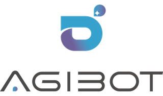
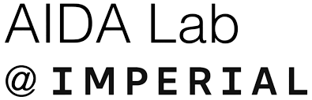
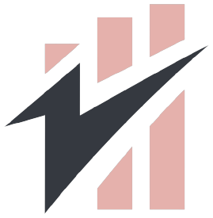
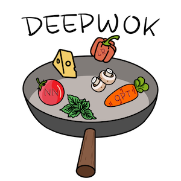
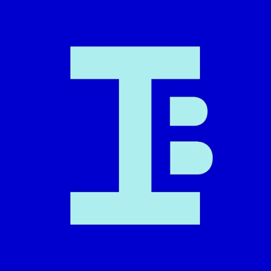

Yamzho Yumco
Tibet
- Camera
- Canon EOS 55
- Lens
- 35–105 mm
Anthony Bolton
I work on problems in robot learning and dexterous manipulation.
I am currently a part of the BIGAI dexterity team, advised by Dr. Siyuan Huang. Prior to this, I was at Peking University CFCS and AGIBOT, advised by Prof. Hao Dong.
I received my MEng in EECS from Imperial in 2025, where I was advised by Prof. Danilo Mandic and was part of the AIDA Lab. My thesis work was published at ICASSP and selected for an oral presentation. In summer 2023, I worked with Dr. Aaron (Yiren) Zhao and Dr. Ilia Shumailov at the DeepWok Lab, where I received the UROP Award. I also joined a fintech startup as part of my industrial placement in 2024.
News
Recent updates[New] OpenDexGrasp is accepted at CoRL 2026 as an Oral (3.1% of accepted papers · 1% of submissions).
Joined the BIGAI dexterity team.
RefineBridge is accepted at ICASSP 2026 as an Oral (19% of accepted papers · 8% of submissions).
Joined CFCS, Peking University.
Graduated from Imperial College London with an MEng in EECS.
Timeline
Stealth startup (Physical AI & Robotics)
CurrentBuilding ...
Research Scientist Intern
Advised by Dr. Siyuan Huang
Research Assistant
Advised by Prof. Hao Dong


Undergraduate Researcher
Advised by Prof. Danilo Mandic

Behaviour Lab
Software Engineer & Data Scientist
Posaidon
Co-Founder

DeepWok Lab · Imperial College London
Research Intern
Advised by Dr. Aaron (Yiren) Zhao & Dr. Ilia Shumailov
Amazon
Software Engineer Spring Intern
Education
-
Master of Engineering
Electrical Engineering and Computer Science (EIE)
Imperial College London
2021 – 2025London, UK
-

Entrepreneurship
Business for Professionals of Engineering and Science
Imperial Business School
2023 – 2024London, UK
Awards & honors
Imperial College Faculty of Engineering UROP Award
Ripple & EasyA Amsterdam Hackathon — Runner-up